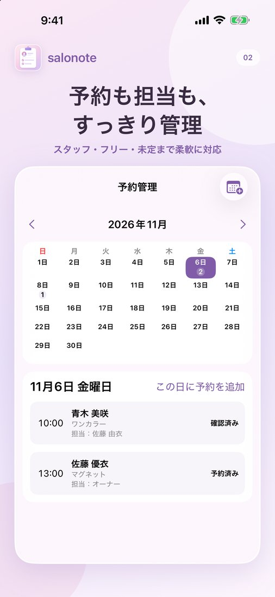

美容院の予約管理を、髪カルテと会計とひとつに
salonote（サロノート）は、個人・小規模の美容院・美容室向けのiPhone・iPadアプリです。予約帳、カラーレシピを残す髪カルテ、お会計を行き来せずに、1つのアプリで管理できます。
salonoteの予約管理でできること
- 月のカレンダーで予約件数をひと目で確認し、日ごとに時間・お客様・メニュー・担当を一覧できる
- 担当スタイリストを「スタッフ指定」「フリー」「未定」から選べる
- 予約のお客様の髪カルテで、前回のカラーレシピや注意事項をすぐ確認できる
- 当日の予約から、そのまま施術と会計を始められる
- 無料で始められ、プロ版は月額0円の買い切り（15,000円）
先にお伝えしたいこと：お客様からのネット予約の受付や、ホットペッパービューティーなどの予約サイトとの連携はありません。サロンの中で使う「予約帳」のアプリです。
紙の予約帳から、カルテとつながる予約管理へ
美容院の予約帳は、紙のノートやスマホのカレンダーで続けているお店も多いはずです。ただ、予約帳とカルテが別々だと、来店前に前回のカラーの配合や、かぶれの経験を探す手間がかかります。
salonoteでは、予約はお客様のカルテとつながっています。予約のお客様のカルテを開けば、前回のカラーレシピ、仕上がりの反応、次回の方針が確認でき、アレルギーなどの注意事項はカルテの一番上に表示されます。カルテの「予約」タブには、そのお客様の予約の履歴もまとまります。
担当スタイリストと、その日の流れ
予約ごとに担当を「スタッフ指定」「フリー」「未定」から選べます。ホーム画面では、本日の予約件数と次のお客様を確認でき、「サロン全体」と「自分の担当」を切り替えて表示できます。スタッフはそれぞれのログインで使えるので、1台のiPadを受付に置いて共有することもできます。
予約に記録できること
| 項目 | 内容 |
|---|---|
| 日時 | 開始と終了の時刻 |
| お客様 | 登録済みのお客様から選択（カルテNOと氏名で表示） |
| 担当 | スタッフ指定・フリー・未定 |
| 状態 | 予約済み・確認済み・完了・キャンセル・無断キャンセル |
| メニュー | 自由に入力（例：カット＋リタッチカラー） |
| スタッフ専用メモ | お客様には見せない申し送り |

予約から、料金の見える会計へ
施術・会計の画面には当日の予約が並び、選ぶだけで施術を始められます。カット、カラー、トリートメント、指名料などを追加するたびに合計金額がその場で更新され、お客様にそのまま見せられる明細画面で会計できます。料金表は美容室向けのカテゴリーが最初から用意されていて、名前の変更や並べ替えでお店のメニューに合わせられます。
ネット予約や予約サイトとの使い分け
salonoteには、お客様が自分で予約するネット予約の機能や、ホットペッパービューティーなどの予約サイトとの連携はありません。予約サイトで受けた予約は、salonoteに手で登録します。
そのため、電話やLINE、来店時の次回予約が中心の美容院や、予約サイトの管理画面とは別に、髪カルテと一緒に予約を見たい美容室に向いています。予約のほとんどがネット予約で、二重に入力する手間を省きたい場合は、予約サイト側の管理機能が合っているかもしれません。
向いているサロン、向いていないサロン
向いているサロン
- 個人経営やスタイリスト数名までの美容院・美容室
- 紙の予約帳とカルテを、スマホやiPadにまとめたいサロン
- 月額料金をかけずに、予約・カルテ・会計を管理したいサロン
向いていないサロン
- お客様からのネット予約を受け付けたいサロン
- カラーの放置時間中に別のお客様の施術を入れるなど、複雑な時間割の予約を組みたいサロン
- AndroidやPCで使いたいサロン（iPhone・iPad専用です）
よくある質問
お客様からのネット予約を受け付けられますか？
できません。salonoteの予約管理は、サロンの中で予約を管理するための機能です。電話・LINE・予約サイトで受けた予約を、オーナーやスタッフが登録して使います。
ホットペッパービューティーの予約を自動で取り込めますか？
できません。予約サイトとの連携はないため、予約サイトで受けた予約はsalonoteに手で登録します。
指名のスタイリストを予約に登録できますか？
はい。予約ごとに担当を「スタッフ指定」「フリー」「未定」から選べます。ホーム画面では「サロン全体」と「自分の担当」を切り替えて予約を確認できます。
料金はいくらですか？
無料版は顧客5名まで利用できます。プロ版は15,000円の買い切りで、月額料金はありません。詳しくは料金プランをご覧ください。